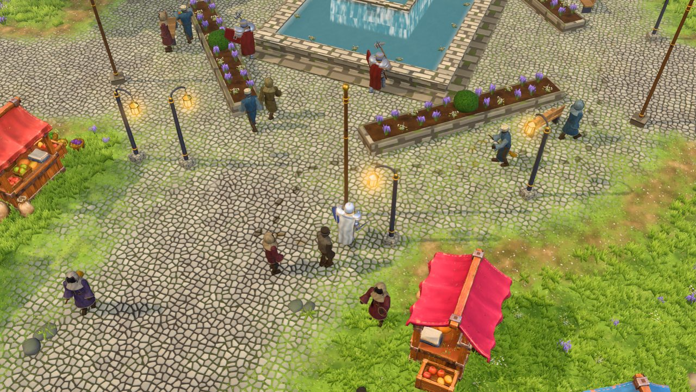
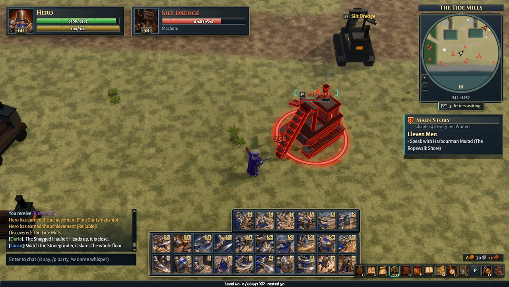
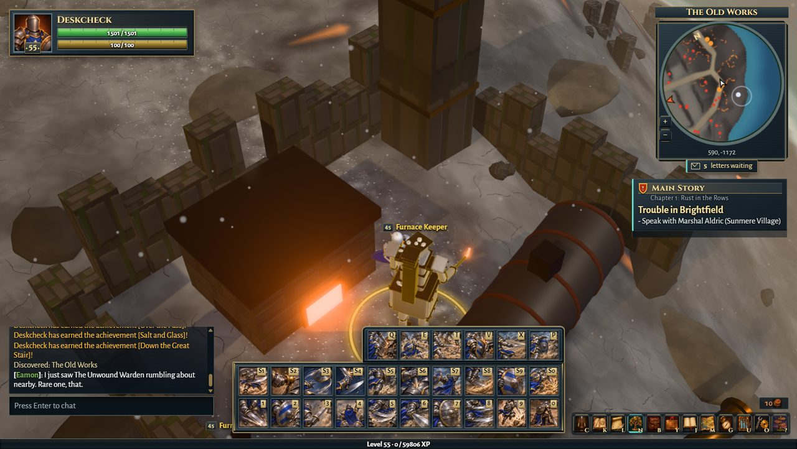
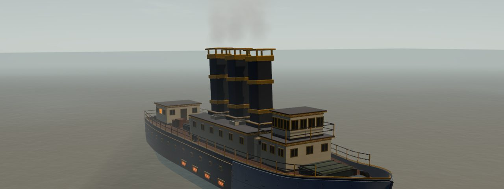
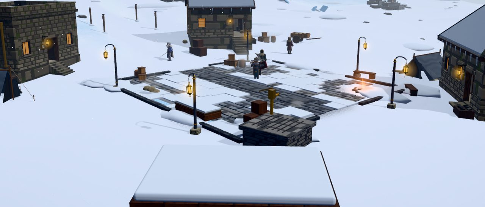
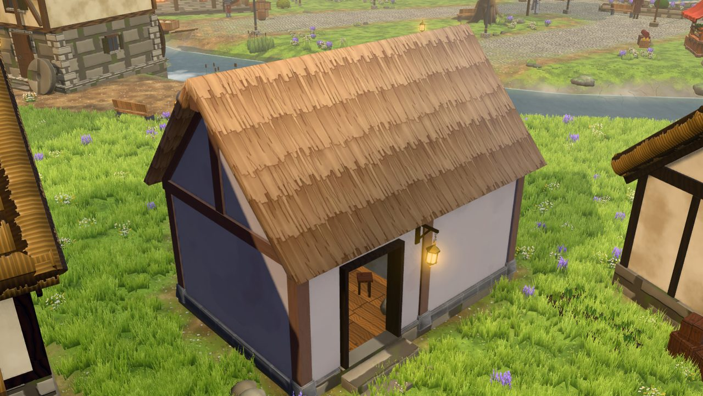

Sunmere Online
A hand-built fantasy world of steam engines, quarries and wind-driven works. Follow the Main Story across the valley and the islands, take on machine bosses and raids with other players, and keep the old Makers' works running.
Play in your browserFree. Sign in with Google to play together in the online world. No download needed.

Screenshots





What it is
Seven classes
Knight, Ranger, Chemist, Sandblade, Warden, Herbalist and Deadeye, each with its own weapon, skills and talents.
Knight, Ranger, Chemist, Sandblade, Warden, Herbalist and Deadeye, each with its own weapon, skills and talents.
Quests and dungeons
A long Main Story, side quests, dungeons and raids against steam-driven machines, gear to collect and upgrade.
A long Main Story, side quests, dungeons and raids against steam-driven machines, gear to collect and upgrade.
Play together
Parties, guilds, trading, duels, friends and chat. Characters marked (bot) are the game's own adventurers, so you always know who is a real player.
Parties, guilds, trading, duels, friends and chat. Characters marked (bot) are the game's own adventurers, so you always know who is a real player.
Playing
Sign in with Google to play together
The online world needs a Google sign-in so your characters stay yours. The game only gets your Google display name, never shows your email. See the privacy policy. You can also play offline in the browser without signing in.
The online world needs a Google sign-in so your characters stay yours. The game only gets your Google display name, never shows your email. See the privacy policy. You can also play offline in the browser without signing in.
Requirements
- Desktop Chrome or Edge (recent version), keyboard and mouse
- A graphics card from the last few years
- Android: there is also an app (APK) — download
Early access, hosted from home
Sunmere Online is a solo hobby project in early access. The online world runs on the developer's own PC, so it may be offline at times (offline play still works). Expect some bugs: reports are welcome.
Sunmere Online is a solo hobby project in early access. The online world runs on the developer's own PC, so it may be offline at times (offline play still works). Expect some bugs: reports are welcome.